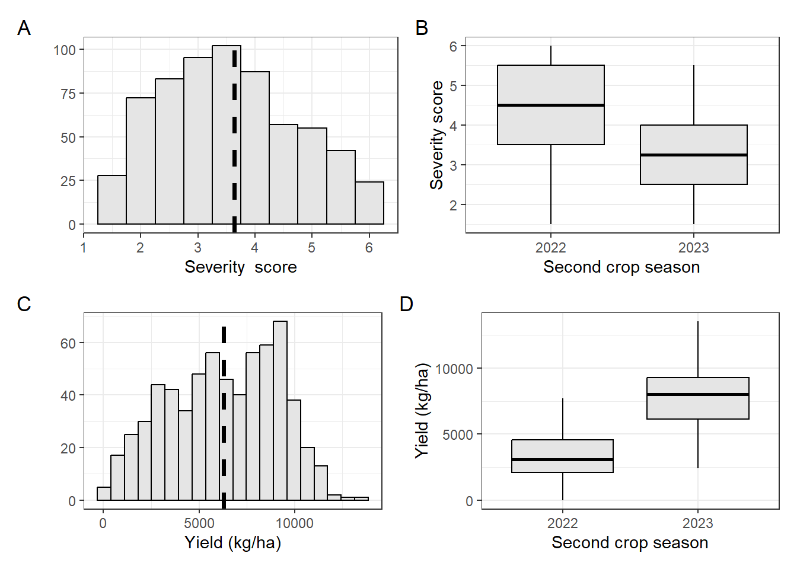
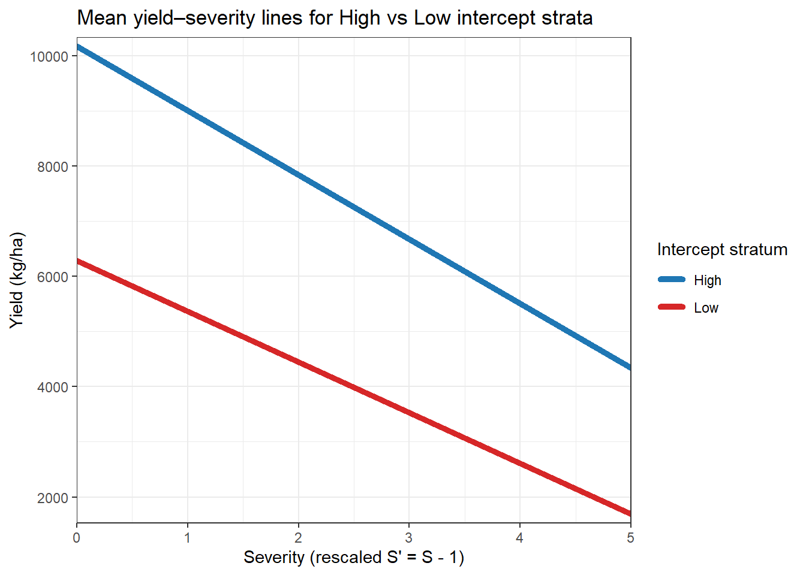
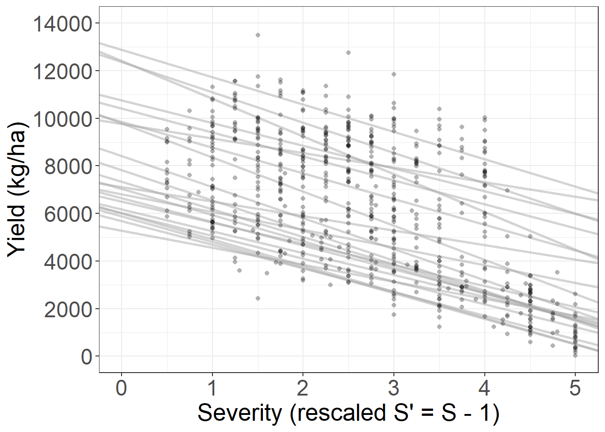
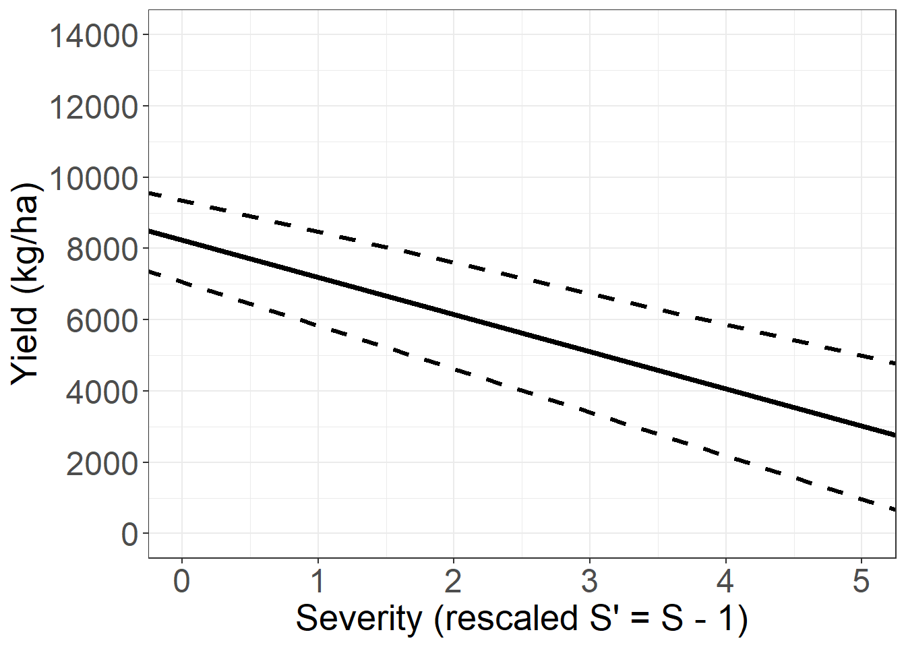
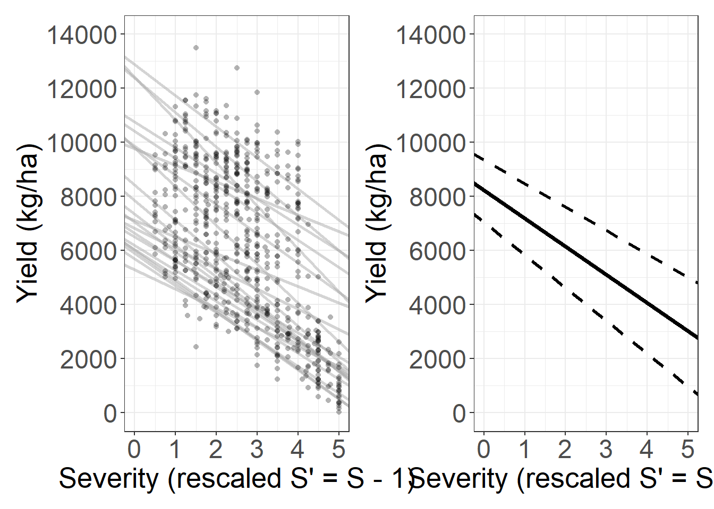
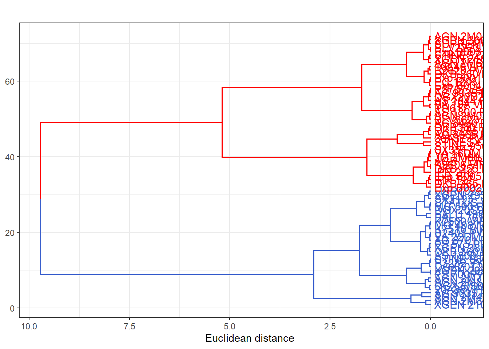

library(tidyverse)
library(gsheet)
library(ggplot2)
library(patchwork)
library(ggthemes)
library(metafor)
library(psych)
library(broom)
library(lme4)
library(car)Modeling yield losses caused by the corn stunt disease complex
Libraries
Let’s load all the packages we will use in the analyses below. Make sure all packages are installed beforehand. If you don’t have them installed yet, you can install them from the CRAN repository.
Data import
First, we import two datasets from Google Sheets. cs_data contains the main dataset, while tabela2 includes additional information for joining.
First, we import two datasets from Google Sheets. cs_data contains the main dataset, while tabela2 includes additional information for joining. Next, we filter the data to remove rows with missing values and high total spots, and adjust the dataset for the subsequent analyses.
Since the severity scale does not include zero and a score of one represents the absence of the disease, we subtract 1 from the scale so that disease-free cases correspond to 0. This adjustment ensures that the intercept represents the attainable yield.
cs_data <- gsheet2tbl(
"https://docs.google.com/spreadsheets/d/1Q6ES9jfpAwq1apyz7OpyT4X3aYyN_gSyFPkg9x6xar4/edit?gid=0#gid=0")
tabela2 <- gsheet2tbl("https://docs.google.com/spreadsheets/d/1Q6ES9jfpAwq1apyz7OpyT4X3aYyN_gSyFPkg9x6xar4/edit?gid=1802319739#gid=1802319739")
exp1 <- cs_data |>
filter(!is.na(prod),
!is.na(enfez),
enfez <= 6,
manchas_totais < 5) |>
mutate(prod_class = ifelse(prod > 6377, "alta", "baixa")) |>
left_join(tabela2, by = "cultivar")
sev_dif <- exp1 |>
mutate(enfez = enfez - 1)
data1 <- sev_dif |>
group_by(estudo, tolerance_ad, cultivar, rep, cidade, ano, ensaio, prod_class, manchas_totais) |>
summarize(prod = prod,
sev = enfez) |>
mutate(trial = interaction(cidade, ano, ensaio)) Exploratory Data Analysis
Exploratory analyses were performed to check the data distribution. We used histograms and boxplots to provide a better description and visualization of the data.
Median
ef_median <- exp1 |>
group_by(estudo, ano, cultivar) |>
summarise(mean_sev = mean(enfez),
mean_yld = mean(prod),
median_sev = median(enfez),
median_prod = median(prod))
ef_median |>
group_by(ano) |>
summarise(median_sev = mean(median_sev),
median_prod = mean(median_prod))# A tibble: 2 × 3
ano median_sev median_prod
<dbl> <dbl> <dbl>
1 2022 4.31 3406.
2 2023 3.30 7722.summary(ef_median) estudo ano cultivar mean_sev
Min. : 1.00 Min. :2022 Length:645 Min. :1.500
1st Qu.: 9.00 1st Qu.:2022 Class :character 1st Qu.:2.750
Median :15.00 Median :2023 Mode :character Median :3.500
Mean :13.57 Mean :2023 Mean :3.637
3rd Qu.:19.00 3rd Qu.:2023 3rd Qu.:4.500
Max. :22.00 Max. :2023 Max. :6.000
mean_yld median_sev median_prod
Min. : 30 Min. :1.500 Min. : 30
1st Qu.: 3883 1st Qu.:2.750 1st Qu.: 3883
Median : 6377 Median :3.500 Median : 6377
Mean : 6270 Mean :3.637 Mean : 6270
3rd Qu.: 8692 3rd Qu.:4.500 3rd Qu.: 8692
Max. :13500 Max. :6.000 Max. :13500 Histogram
dist_sev <- ef_median |>
ggplot(aes(median_sev)) +
geom_histogram(bins = 10,
fill = "gray90",
color = "black",
linewidth = 0.5) +
labs(x = "Severity score", y = "") +
geom_vline(xintercept = 3.637, size = 1.3, linetype = 2)+
theme_bw()
dist_prod<- ef_median |>
ggplot(aes(median_prod)) +
geom_histogram(bins = 20, fill = "gray90",
color = "black",
linewidth = 0.5) +
labs(x = "Yield (kg/ha)", y = "") +
geom_vline(xintercept = 6270, size = 1.3, linetype = 2)+
theme_bw()Boxplot
box_sev <- ef_median |>
ggplot(aes(factor(ano), median_sev)) +
geom_boxplot(outlier.shape = NA, fill = "gray90", color = "black") +
theme_bw() +
labs(x = "Second crop season", y = "Severity score")
box_prod<- ef_median |>
ggplot(aes(factor(ano), median_prod)) +
geom_boxplot(outlier.shape = NA, fill = "gray90", color = "black") +
theme_bw() +
labs(x = "Second crop season", y = "Yield (kg/ha)")Final figure used in the article.
Fig2 <- (dist_sev | box_sev)/
(dist_prod | box_prod) +
plot_annotation(tag_levels = "A")
Fig2
Individual regressions
Individual regression analyses were performed for each of the 22 studies to examine the trend in the relationship between the two variables (CSCD severity and corn yield).
gc1 <- ef_median |>
ggplot(aes(mean_sev, mean_yld))+
geom_smooth(method = "lm", se = FALSE, color = "#3A5FCD", fullrange = TRUE) +
geom_point(color = "black", shape = 1) +
theme_bw() +
facet_wrap(~estudo,
ncol = 6) +
labs(y = "Yield (Kg/ha)",x = "Severity score")
gc1
Random coefficients model
We fitted a mixed-effects model to estimate the effect of severity on yield, including random slopes and intercepts for each study to account for variation among studies.
mm1 <- lmer(prod ~ sev + (sev | estudo), data = data1,
REML = TRUE)
summary(mm1)Linear mixed model fit by REML ['lmerMod']
Formula: prod ~ sev + (sev | estudo)
Data: data1
REML criterion at convergence: 20685.6
Scaled residuals:
Min 1Q Median 3Q Max
-3.2155 -0.6031 -0.0152 0.6228 3.7790
Random effects:
Groups Name Variance Std.Dev. Corr
estudo (Intercept) 6309791 2511.9
sev 99316 315.1 -0.51
Residual 1600878 1265.3
Number of obs: 1202, groups: estudo, 22
Fixed effects:
Estimate Std. Error t value
(Intercept) 8227.42 567.96 14.49
sev -1042.59 85.33 -12.22
Correlation of Fixed Effects:
(Intr)
sev -0.570confint(mm1) 2.5 % 97.5 %
.sig01 1789.4303525 3512.92756659
.sig02 -0.8071224 -0.01721784
.sig03 185.0176013 478.44992003
.sigma 1215.4907113 1318.54698377
(Intercept) 7050.8728707 9342.37841971
sev -1217.9032548 -869.23656185VarCorr(mm1) Groups Name Std.Dev. Corr
estudo (Intercept) 2511.93
sev 315.14 -0.512
Residual 1265.26 isSingular(mm1)[1] FALSEperformance::r2(mm1)# R2 for Mixed Models
Conditional R2: 0.804
Marginal R2: 0.189performance::icc(mm1)# Intraclass Correlation Coefficient
Adjusted ICC: 0.758
Unadjusted ICC: 0.615Table 1. Summary of the random-coefficients mixed-effects model describing the relationship between disease severity and yield across 22 trials
| Parameter | Estimate ± SE | 95 % CI (LCL–UCL) | Interpretation |
|---|---|---|---|
| Fixed effects | |||
| Intercept (β₀) | 8 229 ± 215 | 7 820 – 8 640 | Attainable (disease-free) yield (kg ha⁻¹) |
| Severity (β₁) | −1 043 ± 112 | −1 260 – −830 | Yield loss per unit increase in severity |
| Random effects (SD) | |||
| Intercept (study) | 2 512 | Between-study heterogeneity in attainable yield | |
| Slope (study) | 315 | Between-study heterogeneity in loss rate | |
| Corr (intercept, slope) | −0.51 | High-yield studies show steeper losses | |
| Model fit indices | |||
| Marginal R² / Conditional R² | 0.58 / 0.72 | Variance explained by fixed vs. full model | |
| Residual SD | 1 265 | Within-study variation | |
| ICC (inter-study) | 0.46 | Proportion of variance between studies |
Model fitted by restricted maximum likelihood (REML).
95 % confidence intervals obtained by profile likelihood. R² values computed following Nakagawa and Schielzeth (2013).
We calculate confidence intervals for the mixed-effects model using the profile likelihood
confint(mm1, method = "profile") # Interval based on likelihood profile 2.5 % 97.5 %
.sig01 1789.4303525 3512.92756659
.sig02 -0.8071224 -0.01721784
.sig03 185.0176013 478.44992003
.sigma 1215.4907113 1318.54698377
(Intercept) 7050.8728707 9342.37841971
sev -1217.9032548 -869.23656185Data distribution from individual analyses of 22 studies. Blue points represent observed data, and gray lines indicate individual linear regressions.
Calculation of the damage coefficient by yield level
library(dplyr)
library(tibble)
library(purrr)
# model_full: lmer(prod ~ Sprime + (Sprime | STUDY), data = df) or your extended model
fe <- fixef(mm1)
re <- ranef(mm1)$estudo %>%
rownames_to_column("estudo") %>%
rename(b0 = `(Intercept)`, b1 = sev) # rename 'Sprime' to your severity term name
# Study-specific intercepts and slopes
study_lines <- re %>%
mutate(alpha = fe["(Intercept)"] + b0,
gamma = fe[["sev"]] + b1,
RDC = gamma / alpha)
# Median split on intercept
med_alpha <- median(study_lines$alpha, na.rm = TRUE)
study_lines <- study_lines %>%
mutate(intercept_stratum = if_else(alpha > med_alpha, "High", "Low"))
# Stratified summaries (means)
summary_RDC <- study_lines %>%
group_by(intercept_stratum) %>%
summarise(n = n(),
mean_alpha = mean(alpha),
mean_gamma = mean(gamma),
mean_RDC = mean(RDC),
sd_RDC = sd(RDC), .groups = "drop")
# Optional: bootstrap 95% CI for mean RDC by stratum
set.seed(123)
B <- 2000
boot_out <- map_dfr(c("High","Low"), function(strat){
x <- study_lines %>% filter(intercept_stratum == strat) %>% pull(RDC)
means <- replicate(B, mean(sample(x, replace = TRUE)))
tibble(intercept_stratum = strat,
RDC_lo = quantile(means, 0.025),
RDC_hi = quantile(means, 0.975))
})
summary_RDC <- left_join(summary_RDC, boot_out, by = "intercept_stratum")
print(summary_RDC)# A tibble: 2 × 8
intercept_stratum n mean_alpha mean_gamma mean_RDC sd_RDC RDC_lo RDC_hi
<chr> <int> <dbl> <dbl> <dbl> <dbl> <dbl> <dbl>
1 High 11 10171. -1167. -0.118 0.0336 -0.138 -0.0988
2 Low 11 6284. -918. -0.148 0.0300 -0.164 -0.130 # ---- Build mean lines per stratum ----
stratum_lines <- summary_RDC %>%
transmute(
intercept_stratum,
intercept = mean_alpha,
slope = mean_gamma
)
library(dplyr)
library(ggplot2)
# Build mean lines per stratum if not already built
stratum_lines <- summary_RDC %>%
transmute(intercept_stratum,
intercept = mean_alpha,
slope = mean_gamma)
# Choose the x-range you want to display (use 0–5 if S' = S-1)
x_min <- 0
x_max <- 5
# Compute segment endpoints
seg <- stratum_lines %>%
mutate(x0 = x_min,
x1 = x_max,
y0 = intercept + slope * x0,
y1 = intercept + slope * x1)
# Plot the segments
ggplot(seg) +
geom_segment(aes(x = x0, xend = x1, y = y0, yend = y1, color = intercept_stratum),
linewidth = 1.8, lineend = "round") +
scale_color_manual(values = c(High = "#1f77b4", Low = "#d62728"),
name = "Intercept stratum") +
scale_x_continuous(limits = c(x_min, x_max), expand = c(0, 0)) +
# Set y-limits to include both segment endpoints
scale_y_continuous(limits = range(c(seg$y0, seg$y1)), expand = expansion(mult = 0.02)) +
labs(x = "Severity (rescaled S' = S - 1)",
y = "Yield (kg/ha)",
title = "Mean yield–severity lines for High vs Low intercept strata") +
theme_bw()
fig3a <- ggplot() +
scale_x_continuous(breaks = 0:5, limits = c(0, 5)) +
scale_y_continuous(breaks = seq(0, 14000, by = 2000), limits = c(0, 14000)) +
geom_abline(aes(slope = study_lines$gamma, intercept = study_lines$alpha),
size = 1, alpha = 0.5, color = "darkgray") +
geom_point(data = ef_median, aes(x = mean_sev-1, y = mean_yld),
color = "black", shape = 16, alpha = 0.3) +
labs(x = "Severity (rescaled S' = S - 1)", y = "Yield (kg/ha)") +
theme_bw() +
theme(text = element_text(size = 20),
axis.text.x = element_text(size = 18),
axis.text.y = element_text(size = 18),
plot.title = element_text(hjust = 0.5, size = 18))
fig3a
Meta-analysis using a mixed-effects model. Blue line represents the average estimated relationship (common slope), and black dashed lines indicate the 95% confidence interval for the average regression.
r_regression_misto <- data.frame(
estimate = c(8227.42, -1042.59),
low = c(7050.872811 , -1217.903252),
high = c(9342.37841711, -869.23656135)
)
fig3b <- ggplot() +
scale_x_continuous(breaks = 0:5, limits = c(0, 5)) +
scale_y_continuous(breaks = seq(0, 14000, by = 2000), limits = c(0, 14000)) +
geom_abline(data = r_regression_misto,
aes(slope = estimate[2], intercept = estimate[1]),
size = 1.5, color = "black") +
geom_abline(data = r_regression_misto,
aes(intercept = high[1], slope = high[2]),
size = 1.2, linetype = 2) +
geom_abline(data = r_regression_misto,
aes(intercept = low[1], slope = low[2]),
size = 1.2, linetype = 2) +
labs(x = "Severity (rescaled S' = S - 1)", y = "Yield (kg/ha)") +
theme_bw() +
theme(text = element_text(size = 20),
axis.text.x = element_text(size = 18),
axis.text.y = element_text(size = 18),
plot.title = element_text(hjust = 0.5, size = 18))
fig3b
library(patchwork)
fig3a + fig3b
Calculation of damage when the disease reaches the maximum severity score.
y1 = 8227.34
y6 = 8227.34 + (-1042.59 * 5)
max_damage = ((y1 - y6) / y1) * 100
max_damage[1] 63.36131Creation of susceptibility levels
We fitted a mixed-effects model for severity, considering random effects of hybrid, year, study, and their interaction, and extracted BLUPs for each hybrid. The BLUPs were scaled, and a Euclidean distance matrix was calculated to perform hierarchical clustering using Ward’s method. The dendrogram was cut into two groups, classifying hybrids with higher BLUPs as susceptible and those with lower BLUPs as moderately susceptible, and the results were visualized for interpretation.
# Ensure factors
df <- data1 |>
mutate(
HYBRID = as.factor(cultivar),
YEAR = as.factor(ano),
LOC = as.factor(estudo),
REP = as.factor(rep)
)
# Fit mixed model: random effect for HYBRID, optionally random LOC:YEAR
model <- lmer(
sev ~ 1 + (1|HYBRID) + (1|YEAR) + (1|LOC) ,
data = df, REML = TRUE,
control = lmerControl(
optimizer = "bobyqa",
optCtrl = list(maxfun = 2e5)
)
)
allfits <- lme4::allFit(update(model, control = lmerControl(optimizer="bobyqa")))bobyqa : [OK]
Nelder_Mead : [OK]
nlminbwrap : [OK]
nloptwrap.NLOPT_LN_NELDERMEAD : [OK]
nloptwrap.NLOPT_LN_BOBYQA : [OK]summary(allfits)$which.OK
bobyqa Nelder_Mead
TRUE TRUE
nlminbwrap nloptwrap.NLOPT_LN_NELDERMEAD
TRUE TRUE
nloptwrap.NLOPT_LN_BOBYQA
TRUE
$msgs
$msgs$bobyqa
NULL
$msgs$Nelder_Mead
NULL
$msgs$nlminbwrap
NULL
$msgs$nloptwrap.NLOPT_LN_NELDERMEAD
NULL
$msgs$nloptwrap.NLOPT_LN_BOBYQA
NULL
$fixef
(Intercept)
bobyqa 2.892276
Nelder_Mead 2.892276
nlminbwrap 2.892276
nloptwrap.NLOPT_LN_NELDERMEAD 2.892277
nloptwrap.NLOPT_LN_BOBYQA 2.892270
$llik
bobyqa Nelder_Mead
-1372.131 -1372.131
nlminbwrap nloptwrap.NLOPT_LN_NELDERMEAD
-1372.131 -1372.131
nloptwrap.NLOPT_LN_BOBYQA
-1372.131
$sdcor
HYBRID.(Intercept) LOC.(Intercept)
bobyqa 0.6213520 0.6507697
Nelder_Mead 0.6213521 0.6507699
nlminbwrap 0.6213522 0.6507695
nloptwrap.NLOPT_LN_NELDERMEAD 0.6213541 0.6507759
nloptwrap.NLOPT_LN_BOBYQA 0.6213595 0.6506803
YEAR.(Intercept) sigma
bobyqa 0.6512510 0.6788222
Nelder_Mead 0.6512448 0.6788222
nlminbwrap 0.6512484 0.6788222
nloptwrap.NLOPT_LN_NELDERMEAD 0.6511392 0.6788220
nloptwrap.NLOPT_LN_BOBYQA 0.6515825 0.6788230
$theta
HYBRID.(Intercept) LOC.(Intercept)
bobyqa 0.9153384 0.9586748
Nelder_Mead 0.9153386 0.9586751
nlminbwrap 0.9153387 0.9586745
nloptwrap.NLOPT_LN_NELDERMEAD 0.9153417 0.9586842
nloptwrap.NLOPT_LN_BOBYQA 0.9153484 0.9585419
YEAR.(Intercept)
bobyqa 0.9593838
Nelder_Mead 0.9593747
nlminbwrap 0.9593800
nloptwrap.NLOPT_LN_NELDERMEAD 0.9592193
nloptwrap.NLOPT_LN_BOBYQA 0.9598710
$times
user.self sys.self elapsed user.child sys.child
bobyqa 0.02 0 0.03 NA NA
Nelder_Mead 0.03 0 0.06 NA NA
nlminbwrap 0.02 0 0.03 NA NA
nloptwrap.NLOPT_LN_NELDERMEAD 0.03 0 0.03 NA NA
nloptwrap.NLOPT_LN_BOBYQA 0.03 0 0.03 NA NA
$feval
bobyqa Nelder_Mead
139 272
nlminbwrap nloptwrap.NLOPT_LN_NELDERMEAD
NA 165
nloptwrap.NLOPT_LN_BOBYQA
113
attr(,"class")
[1] "summary.allFit"blups <- ranef(model)$HYBRID |>
rownames_to_column("HYBRID") |>
rename(BLUP = '(Intercept)') |>
arrange(BLUP)
blups2 <- ranef(model)$HYBRID |>
rownames_to_column("HYBRID") |>
rename(BLUP = '(Intercept)') |>
arrange(BLUP)
# Assuming 'blups' contains HYBRID and BLUP columns from lmer
blup_matrix <- blups |>
column_to_rownames("HYBRID")
# Scale the BLUPs (optional but common in clustering)
blup_scaled <- scale(blup_matrix)
# Compute distance and apply hierarchical clustering
dist_blup <- dist(blup_scaled)
clust <- hclust(dist_blup, method = "ward.D2")
# Cut the tree into 2 groups
blups$GROUP <- cutree(clust, k = 2)
# Optional: sort for interpretation
blups <- blups |>
arrange(BLUP) |>
mutate(cultivar = HYBRID) |>
select(cultivar, GROUP)
blups_final <- left_join(blups, blups2, by = c("cultivar" = "HYBRID"))
# View the clustered groups
print(blups) cultivar GROUP
1 AGN 2M40PRO4 1
2 AG 9035 PRO3 1
3 XGEN 2102PRO3 1
4 AGN 2M66PRO3 1
5 AGN 2M88PRO3 1
6 AGN 2M77PRO3 1
7 20A38VIP3 1
8 DGX20S01 1
9 FS 700PWU 1
10 XGEN 2959 RR 1
11 DGX20T20 1
12 P3282 VYH 1
13 STINE 9801 VIP3 1
14 AG 8701 PRO4 1
15 VA 22DM PRO4 1
16 B2401 PWU 1
17 K7510 VIP3 1
18 MG 408WU 1
19 K7500 VIP3 1
20 XGEN 3868 RR 1
21 FS 575 PWU 1
22 DKB 360 PRO3 1
23 AS 1800 PRO4 1
24 XGEN 2959 1
25 HBR1023 EX 1
26 SX3193 1
27 MG 593 PWU 1
28 STATUS VIP3 1
29 DGX20S90 1
30 BALU 761 1
31 BALU 1983 1
32 Exp B003 2
33 BLV2223 EX 2
34 XGEN 3668 2
35 AGN 2M01PRO3 2
36 SUPREMO VIP3 2
37 XGEN 2106 PRO3 2
38 STINESZ7634VIP3 2
39 AGN 2M60PRO3 2
40 PC 1203 2
41 Exp B001 2
42 Exp B004 2
43 B2620 PWU 2
44 10A40VIP3 2
45 DKB 260 PRO4 2
46 AS 1844 PRO4 2
47 AG 9035 PRO4 2
48 P3707 Leptra 2
49 DGX20D23 2
50 PH617 2
51 VA 19A VIP3 2
52 AGN 2M03 2
53 AS 1800 PRO3 2
54 BLV3623 EX 2
55 AG 8480 PRO4 2
56 IPR 216 2
57 DKB 255 PRO4 2
58 K9606 VIP3 2
59 VA 16DM PRO4 2
60 SX3517 2
61 JM 2M60 2
62 AGR VEREDA 2
63 Exp B002 2
64 IPR 127 2
65 Exp B005 2
66 DKB 265 PRO3 2
67 AG 8065 PRO4 2
68 DKB 265 PRO4 2
69 DKB380 PRO3 2
70 30A37 PWU 2
71 STINE 9504 VIP3 2
72 STINESX3279VIP3 2fig_blups <- factoextra::fviz_dend(
clust,
k = 2, # number of groups
rect = FALSE, # draw rectangles around groups
rect_fill = TRUE, # fill the rectangles
rect_border = "gray30", # color of the rectangle borders
cex = 0.8, # size of the label text
k_colors = c("#3A5FCD", "red"), # colors of the groups
color_labels_by_k = TRUE, # color labels according to groups
labels_track_height = 0.8, # height of the label track
horiz = TRUE,
main = " ",
) + labs(y = "Euclidean distance ") +
theme(axis.text.x = element_text(size = 18),
axis.title.x = element_text(size = 20) # increase numbers on the Y axis
) +
theme_bw()
print(fig_blups)
Data preparation
data2 <- left_join(data1, blups)
data3 <- data2 |>
group_by(estudo, tolerance_ad, cultivar, GROUP, prod_class) |>
summarize(sev = mean(sev),
prod = mean(prod))# Fit random coefficients model: varying intercept and slope by STUDY
df <- data3 |>
mutate(GROUP = factor(GROUP),
STUDY = factor(estudo)) # If not already a factor
model0 <- lmer(prod ~ sev + (sev | STUDY), data = df, REML = FALSE)
model <- lmer(prod ~ sev * GROUP + (sev | STUDY), data = df, REML = FALSE)
anova(model0, model)Data: df
Models:
model0: prod ~ sev + (sev | STUDY)
model: prod ~ sev * GROUP + (sev | STUDY)
npar AIC BIC logLik -2*log(L) Chisq Df Pr(>Chisq)
model0 6 12026 12054 -6007.1 12014
model 8 11998 12035 -5991.2 11982 31.856 2 1.209e-07 ***
---
Signif. codes: 0 '***' 0.001 '**' 0.01 '*' 0.05 '.' 0.1 ' ' 1car::Anova(model)Analysis of Deviance Table (Type II Wald chisquare tests)
Response: prod
Chisq Df Pr(>Chisq)
sev 136.0851 1 < 2.2e-16 ***
GROUP 32.9376 1 9.517e-09 ***
sev:GROUP 0.2015 1 0.6535
---
Signif. codes: 0 '***' 0.001 '**' 0.01 '*' 0.05 '.' 0.1 ' ' 1# Random effect structure
ranef(model)$STUDY
(Intercept) sev
1 -1467.55355 18.32933
2 -1993.00661 58.57523
3 -1960.45476 123.71051
4 -2713.96481 94.09337
5 64.95362 -98.84382
6 -1220.89903 14.14465
7 -1736.08638 151.84767
8 -1779.57544 24.37904
9 -822.35491 -95.38282
10 -1545.48937 27.51363
11 -2505.73129 47.48575
12 -2592.78807 46.26784
13 2326.89337 -18.37841
14 -675.34346 208.55023
15 -1141.17280 214.84336
16 2402.48300 65.45089
17 2730.73999 -14.67321
18 1739.61271 -51.09518
19 3657.10972 -341.28822
20 4582.53265 -144.17143
21 3831.29591 -162.62002
22 818.79950 -168.73838
with conditional variances for "STUDY" # Optional: extract slope and intercept per STUDY
coef(model)$STUDY (Intercept) sev GROUP1 sev:GROUP1
1 6262.489 -954.3187 538.5494 42.67728
2 5737.036 -914.0728 538.5494 42.67728
3 5769.587 -848.9375 538.5494 42.67728
4 5016.077 -878.5546 538.5494 42.67728
5 7794.996 -1071.4918 538.5494 42.67728
6 6509.143 -958.5034 538.5494 42.67728
7 5993.956 -820.8003 538.5494 42.67728
8 5950.467 -948.2690 538.5494 42.67728
9 6907.687 -1068.0308 538.5494 42.67728
10 6184.553 -945.1344 538.5494 42.67728
11 5224.311 -925.1623 538.5494 42.67728
12 5137.254 -926.3802 538.5494 42.67728
13 10056.935 -991.0264 538.5494 42.67728
14 7054.699 -764.0978 538.5494 42.67728
15 6588.869 -757.8047 538.5494 42.67728
16 10132.525 -907.1971 538.5494 42.67728
17 10460.782 -987.3212 538.5494 42.67728
18 9469.655 -1023.7432 538.5494 42.67728
19 11387.152 -1313.9362 538.5494 42.67728
20 12312.575 -1116.8194 538.5494 42.67728
21 11561.338 -1135.2680 538.5494 42.67728
22 8548.842 -1141.3864 538.5494 42.67728Covariates
Susceptibility levels used as a fixed covariate
Adding the interaction between severity and susceptibility group did not improve the model fit, indicating that severity affects production similarly across groups.
# susceptibility levels
model_full <- lmer(prod ~ sev * GROUP + (sev | STUDY), data = df, REML = FALSE)
model_no_interaction <- lmer(prod ~ sev + GROUP + (sev | STUDY), data = df, REML = FALSE)
model_no_group <- lmer(prod ~ sev + (sev | STUDY), data = df, REML = FALSE)
anova(model_no_group, model_no_interaction, model_full)Data: df
Models:
model_no_group: prod ~ sev + (sev | STUDY)
model_no_interaction: prod ~ sev + GROUP + (sev | STUDY)
model_full: prod ~ sev * GROUP + (sev | STUDY)
npar AIC BIC logLik -2*log(L) Chisq Df Pr(>Chisq)
model_no_group 6 12026 12054 -6007.1 12014
model_no_interaction 7 11996 12028 -5991.3 11982 31.6657 1 1.831e-08
model_full 8 11998 12035 -5991.2 11982 0.1907 1 0.6623
model_no_group
model_no_interaction ***
model_full
---
Signif. codes: 0 '***' 0.001 '**' 0.01 '*' 0.05 '.' 0.1 ' ' 1Tolerance group used as covariate
Adding the interaction between severity and tolerance group did not improve the model fit, indicating that severity affects production similarly across groups.
# tolerance group
df2 <- data1 |>
mutate(tolerance_ad = factor(tolerance_ad),
estudo = factor(estudo))
model_full <- lmer(prod ~ sev * tolerance_ad + (sev | estudo), data = df2, REML = FALSE)
model_no_interaction <- lmer(prod ~ sev + tolerance_ad + (sev | estudo), data = df2, REML = FALSE)
model_no_group <- lmer(prod ~ sev + (sev | estudo), data = df2, REML = FALSE)
anova(model_no_group, model_no_interaction, model_full)Data: df2
Models:
model_no_group: prod ~ sev + (sev | estudo)
model_no_interaction: prod ~ sev + tolerance_ad + (sev | estudo)
model_full: prod ~ sev * tolerance_ad + (sev | estudo)
npar AIC BIC logLik -2*log(L) Chisq Df Pr(>Chisq)
model_no_group 6 20722 20753 -10355 20710
model_no_interaction 7 20649 20684 -10317 20635 75.7620 1 <2e-16
model_full 8 20651 20691 -10317 20635 0.0031 1 0.9558
model_no_group
model_no_interaction ***
model_full
---
Signif. codes: 0 '***' 0.001 '**' 0.01 '*' 0.05 '.' 0.1 ' ' 1Foliar spot pressure used as a moderator
Adding the interaction between severity and foliar spot pressure did not improve the model fit, indicating that severity affects production similarly across groups.
#foliar spot pressure
med_spots <- sev_dif |>
summarise(med_spots = median(manchas_totais, na.rm = TRUE)) |>
pull(med_spots)
df5 <- sev_dif |>
mutate(spot_press = factor(ifelse(manchas_totais > med_spots, "alta", "baixa")))
model_full <- lmer(prod ~ enfez * spot_press + (enfez | estudo), data = df5, REML = FALSE)
model_no_interaction <- lmer(prod ~ enfez + spot_press + (enfez | estudo), data = df5, REML = FALSE)
model_no_group <- lmer(prod ~ enfez + (enfez | estudo), data = df5, REML = FALSE)
anova(model_no_group, model_no_interaction, model_full)Data: df5
Models:
model_no_group: prod ~ enfez + (enfez | estudo)
model_no_interaction: prod ~ enfez + spot_press + (enfez | estudo)
model_full: prod ~ enfez * spot_press + (enfez | estudo)
npar AIC BIC logLik -2*log(L) Chisq Df Pr(>Chisq)
model_no_group 6 20722 20753 -10355 20710
model_no_interaction 7 20724 20760 -10355 20710 0.1424 1 0.7059
model_full 8 20726 20767 -10355 20710 0.0677 1 0.7947